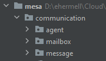
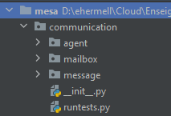

3.4. Interactions in the Mesa library¶
Mesa is a Python framework for agent-based modeling. You have already created a simple model and progressively added functionality which have illustrated Mesa’s core features (first course session, section 4). Now, we will implement in Mesa a direct interactions mechanism: messaging communication.
1. Implementing messaging communication in Mesa¶
With the Mesa library, it is possible to set up indirect interaction mechanisms through the environment (like a blackboard or stigmergy mechanism, see today’s session, section 1). However, it does not handle direct interactions such as message communication. So, first, we will implement our own communication layer in Mesa. This communication layer will be necessary for the realization of the final project.
As seen previously, the messaging communication in MAS is a four step mechanism.

Before implementing the communicating agents and according to the picture, we must create: (1) a Message object, (2) a Mailbox object and (3) a list of allowed performative for messages.
To do so, create a new folder hierarchy as shown in the following picture:
Here is the description of what each folder will contains:
mesa: root folder which will contain your python codes using the communication layer;
communication: the root folder of the communication layer;
agent: the folder which will contain the implementation of the communicating agent class;
mailbox: the folder which will contain the implementation of the mailbox class;
message: the folder which will contain the implementation of the message and performative class.
Create an __init__.py file in the communication, agent, mailbox and message folders to initiate python packages.
As everything is setting up, we can now move on to the implementation of the communication layer.
Messages¶
Enter the message folder and create a new Message.py file. Let’s open this file and implement the Message class. The purpose of this Message class is to create a python message object containing the receiver and sender identifiers but also the performative of the message sent as well as a content. Agents will exchange information using these items during their communication phases. The Message class is therefore composed of four attributes, four accessor methods (used to access the state of the object i.e, the data hidden in the object can be accessed from this method) and a string method (which returns a string, which is considered an informal or nicely printable representation of the message object).
The four attributes of the Message class are:
from_agent: the sender of the message identified by its id;
to_agent: the receiver of the message identified by its id;
message_performative: the performative of the message;
content: the content of the message.
The four accessor methods of the Message class are:
get_exp(): return the sender of the message;
get_dest(): return the receiver of the message;
get_performative(): return the performative of the message;
get_content(): return the content of the message.
Practice yourself!: you can try to implement this class by your own!
Below, a possible implementation of the Message class:
#!/usr/bin/env python3
class Message:
"""Message class.
Class implementing the message object which is exchanged between agents through a message service during communication.
attr:
from_agent: the sender of the message (id)
to_agent: the receiver of the message (id)
message_performative: the performative of the message
content: the content of the message
"""
def __init__(self, from_agent, to_agent, message_performative, content):
""" Create a new message.
"""
self.__from_agent = from_agent
self.__to_agent = to_agent
self.__message_performative = message_performative
self.__content = content
def __str__(self):
""" Return Message as a String.
"""
return "From " + str(self.__from_agent) + " to " + str(self.__to_agent) \
+ " (" + str(self.__message_performative) + ") " + str(self.__content)
def get_exp(self):
""" Return the sender of the message.
"""
return self.__from_agent
def get_dest(self):
""" Return the receiver of the message.
"""
return self.__to_agent
def get_performative(self):
""" Return the performative of the message.
"""
return self.__message_performative
def get_content(self):
""" Return the content of the message.
"""
return self.__content
Now that we have a usable Message object, we are going to create the set of allowed message performatives from a python enumeration. We will define seven message performatives for the moment. It will be very easy to add more later. The seven performatives are as follows:
propose;
accept;
commit;
ask why;
argue;
query;
inform.
In the message folder, create a new file called MessagePerformative.py. Open it and implement the MessagePerformative enumeration class.
#!/usr/bin/env python3
from enum import Enum
class MessagePerformative(Enum):
"""MessagePerformative enum class.
Enumeration containing the possible message performative.
"""
PROPOSE = 101
ACCEPT = 102
COMMIT = 103
ASK_WHY = 104
ARGUE = 105
QUERY_REF = 106
INFORM_REF = 107
def __str__(self):
"""Returns the name of the enum item.
"""
return '{0}'.format(self.name)

Mailbox¶
To manage messages, each communicating agent will have his own mailbox. The purpose of this class is to provide to agents some mechanisms for handling sent and received messages. So, go to the mailbox folder and create a new Mailbox.py file. Let’s open this file and implement the Mailbox class which is composed of two attributes and five methods.
The two attributes of the Mailbox class are:
unread_messages: the list of unread messages;
read_messages: the list of read messages.
The five methods of the Mailbox class are:
receive_messages(message): receive a message and add it in the unread messages list;
get_new_messages(): return all the messages from unread messages list;
get_messages(): return all the messages from both unread and read messages list;
get_messages_from_performative(performative): return a list of messages which have the same performative;
get_messages_from_exp(exp): return a list of messages which have the same sender.
Practice yourself!: you can try to implement this class by your own!
Below, a possible implementation of the Mailbox class:
#!/usr/bin/env python3
class Mailbox:
"""Mailbox class.
Class implementing the mailbox object which manages messages in communicating agents.
attr:
unread_messages: The list of unread messages
read_messages: The list of read messages
"""
def __init__(self):
""" Create a new Mailbox.
"""
self.__unread_messages = []
self.__read_messages = []
def receive_messages(self, message):
""" Receive a message and add it in the unread messages list.
"""
self.__unread_messages.append(message)
def get_new_messages(self):
""" Return all the messages from unread messages list.
"""
unread_messages = self.__unread_messages.copy()
if len(unread_messages) > 0:
for messages in unread_messages:
self.__read_messages.append(messages)
self.__unread_messages.clear()
return unread_messages
def get_messages(self):
""" Return all the messages from both unread and read messages list.
"""
if len(self.__unread_messages) > 0:
self.get_new_messages()
return self.__read_messages
def get_messages_from_performative(self, performative):
""" Return a list of messages which have the same performative.
"""
messages_from_performative = []
for message in self.__unread_messages + self.__read_messages:
if message.get_performative() == performative:
messages_from_performative.append(message)
return messages_from_performative
def get_messages_from_exp(self, exp):
""" Return a list of messages which have the same sender.
"""
messages_from_exp = []
for message in self.__unread_messages + self.__read_messages:
if message.get_exp() == exp:
messages_from_exp.append(message)
return messages_from_exp
The Message and Mailbox classes being created, we will test them. Go to the communication folder and create a new runtests.py file. In this file, we will incrementally add tests to verify that our implementations are working well.
Practice yourself!
Let’s start testing the Mailbox class: using the assert() function. Create three messages with various performatives, one mailbox and test the different methods of the Mailbox class (receive_messages(message), get_new_messages(), get_messages(), get_messages_from_exp() and get_messages_from_performative()). Before looking at the solution, try to implement the tests by your own.
Below, a possible implementation of the runtests.py file:
#!/usr/bin/env python3
"""
Testing all the functionalities of the communication package.
"""
from communication.mailbox.Mailbox import Mailbox
from communication.message.Message import Message
from communication.message.MessagePerformative import MessagePerformative
if __name__ == "__main__":
print("*---- Testing communication package ----")
print("*")
print("* 1) Testing Mailbox receive & get methods")
mailbox = Mailbox()
m1 = Message("Agent1", "Agent2", MessagePerformative.PROPOSE, "Bonjour")
m2 = Message("Agent1", "Agent2", MessagePerformative.ACCEPT, "Hello")
m3 = Message("Agent2", "Agent1", MessagePerformative.ARGUE, "Buenos Dias")
mailbox.receive_messages(m1)
mailbox.receive_messages(m2)
assert(len(mailbox.get_new_messages()) == 2)
print("* get_new_messages() => OK")
assert(len(mailbox.get_messages()) == 2)
print("* get_messages() => OK")
mailbox.receive_messages(m3)
assert(len(mailbox.get_messages()) == 3)
assert(len(mailbox.get_messages_from_exp("Agent1")) == 2)
print("* get_messages_from_exp() => OK")
assert(len(mailbox.get_messages_from_performative(MessagePerformative.ACCEPT)) == 1)
assert(len(mailbox.get_messages_from_performative(MessagePerformative.PROPOSE)) == 1)
assert(len(mailbox.get_messages_from_performative(MessagePerformative.ARGUE)) == 1)
print("* get_messages_from_performative() => OK")
If you see all the OK messages appear, it means that your classes are well implemented and will behave correctly. This is called doing unit tests. It is very important in making sure your code is robust and bugs free.
Message Service¶
At this point, each agent will have their own mailbox instance and will be able to exchange messages. However, there are still no mechanisms to ensure that sent messages reach the right agents. As agents must not directly drop messages in the mailboxes of the other agents, we need to create a service (a message transport mechanism) which will be managed by the environment and which will take care of the management of message shipments and deliveries.
Go to the message folder and create a new MessageService.py file. Let’s open this file and paste the MessageService class implementation that you can find below:
#!/usr/bin/env python3
class MessageService:
"""MessageService class.
Class implementing the message service used to dispatch messages between communicating agents.
Not intended to be created more than once: it's a singleton.
attr:
scheduler: the scheduler of the SMA (Scheduler)
instant_delivery: the instant delivery status of the MessageService
messages_to_proceed: the list of message to proceed mailbox of the agent (list)
"""
__instance = None
@staticmethod
def get_instance():
""" Static access method.
"""
return MessageService.__instance
def __init__(self, scheduler, instant_delivery=True):
""" Create a new MessageService object.
"""
if MessageService.__instance is not None:
raise Exception("This class is a singleton!")
else:
MessageService.__instance = self
self.__scheduler = scheduler
self.__instant_delivery = instant_delivery
self.__messages_to_proceed = []
def set_instant_delivery(self, instant_delivery):
""" Set the instant delivery parameter.
"""
self.__instant_delivery = instant_delivery
def send_message(self, message):
""" Dispatch message if instant delivery active, otherwise add the message to proceed list.
"""
if self.__instant_delivery:
self.dispatch_message(message)
else:
self.__messages_to_proceed.append(message)
def dispatch_message(self, message):
""" Dispatch the message to the right agent.
"""
self.find_agent_from_name(message.get_dest()).receive_message(message)
def dispatch_messages(self):
""" Proceed each message received by the message service.
"""
if len(self.__messages_to_proceed) > 0:
for message in self.__messages_to_proceed:
self.dispatch_message(message)
self.__messages_to_proceed.clear()
def find_agent_from_name(self, agent_name):
""" Return the agent according to the agent name given.
"""
for agent in self.__scheduler.agents:
if agent.get_name() == agent_name:
return agent
As you can see, this class implement a MessageService object which is a singleton: it can only be instantiated once. Thus, there can only be one postal service in the MAS. This service has three attributes, one mutator method and four methoods.
The three attributes of the MessageService class are:
scheduler: the scheduler of the SMA initialized in the Mesa model;
instant_delivery: the instant delivery status of the MessageService. If
True, the message will be delivered instantly in the mailbox of the agent;messages_to_proceed: the list of message to proceed.
The mutator method of the MessageService class is:
set_instant_delivery(instant_delivery): change the instant delivery status of the MessageService.
The four methods of the MessageService class are:
send_message(message): dispatch a given message if instant delivery is actived, otherwise add the message in the MessageService message list to be proceeded after;
dispatch_message(message): dispatch the given message to the right agent;
dispatch_messages(): proceed and dispatch each message received by the message service;
find_agent_from_name(agent_name): return the agent according to the agent name given.
How to use ``MessageService`` class
As described previously, the MessageService will be in charge of distributing the sent messages to the right agents. To use MessageService, it is necessary to instantiate it in the constructor of the Mesa Model and give it as parameter the reference of the Scheduler:
def __init__(self):
self.schedule = RandomActivation(self)
self.__messages_service = MessageService(self.schedule)
...
Then, just call the method dispatch_messages() of the MessageService in the step() method of the Mesa Model.
def step(self):
...
self.__messages_service.dispatch_messages()
...
The MessageService can dispatch the messages instantly or at each time step. You can change this behavior by calling the set_instant_delivery(isntantly) method and give as parameter a Boolean which represents by its value the activation or not of the instantaneous mode.
MessageService.get_instance().set_instant_delivery(False)
Communicating Agent¶
We now have all the tools implemented: (1) Message, (2) MessagePerformative, (3) Mailbox and (4) MessageService. We are going to create a communicating agent that inherits from Mesa Agent class. This CommunicatingAgent class is not intended to be used on its own, but must be inherit to create other agent classes.
If we refer to the four step mechanism presented on the previous section of the course, a communicating agent must be able to:
A communicating agent (sender) builds a message;
A communicating agent (sender) invokes a
sendmethod in the environment (through theMessageService) to send the message, as one of its actions;The environment (through the
MessageService) drops the message in the mailbox of the communicating agent (receiver). This can be done either instantly or not.A communicating agent (receiver) reads its mailbox, either in a systematic manner as part of the perception mechanism in the procedural loop (passive perception) or on purpose, by calling a specific method (active perception).
The CommunicatingAgent must therefore have three attributes, one accessor method and seven methods. Go to the agent folder and create a new CommunicatingAgent.py file. Let’s open this file and implement the CommunicatingAgent class
The three attributes of the CommunicatingAgent class are:
name: the name of the communicating agent which replaces the unique id of Mesa
Agentclass;mailbox: the agent’s unique and private mailbox;
message_service: the reference to the message service instantiated in the environment.
The acceessor method of the CommunicatingAgent class is:
get_name(): return the unique name of the communicating agent.
The seven methods of the CommunicatingAgent class are:
step(): the
step()methods of the communicating agent called by the MesaSchedulerat each time tick;receive_message(message): receive a message (called by the
MessageService) and store it in the mailbox;send_message(message): send message through the
MessageService(messages_service.send_message(message));get_new_messages(): return all the unread messages;
get_messages(): return all the received messages;
get_messages_from_performative(performative): return a list of messages which have the same performative;
get_messages_from_exp(exp): return a list of messages which have the same sender.
As you can see, many methods of the CommunicatingAgent class are the same as the methods of the Mailbox class: we have chosen to have mailbox accessible only through dedicated methods which makes it private.
Practice yourself!: you can try to implement the CommunicatingAgent class by your own!
Below, a possible implementation of the CommunicatingAgent class:
#!/usr/bin/env python3
from mesa import Agent
from communication.mailbox.Mailbox import Mailbox
from communication.message.MessageService import MessageService
class CommunicatingAgent(Agent):
"""CommunicatingAgent class.
Class implementing communicating agent in a generalized manner.
Not intended to be used on its own, but to inherit its methods to multiple
other agents.
attr:
name: The name of the agent (str)
mailbox: The mailbox of the agent (Mailbox)
message_service: The message service used to send and receive message (MessageService)
"""
def __init__(self, unique_id, model, name):
""" Create a new communicating agent.
"""
super().__init__(unique_id, model)
self.__name = name
self.__mailbox = Mailbox()
self.__messages_service = MessageService.get_instance()
def step(self):
""" The step methods of the agent called by the scheduler at each time tick.
"""
super().step()
def get_name(self):
""" Return the name of the communicating agent."""
return self.__name
def receive_message(self, message):
""" Receive a message (called by the MessageService object) and store it in the mailbox.
"""
self.__mailbox.receive_messages(message)
def send_message(self, message):
""" Send message through the MessageService object.
"""
self.__messages_service.send_message(message)
def get_new_messages(self):
""" Return all the unread messages.
"""
return self.__mailbox.get_new_messages()
def get_messages(self):
""" Return all the received messages.
"""
return self.__mailbox.get_messages()
def get_messages_from_performative(self, performative):
""" Return a list of messages which have the same performative.
"""
return self.__mailbox.get_messages_from_performative(performative)
def get_messages_from_exp(self, exp):
""" Return a list of messages which have the same sender.
"""
return self.__mailbox.get_messages_from_exp(exp)
Practice yourself!
All the features of the Mesa communication layer being implemented, we will complete the runtests.py file to test the MessageService and CommunicatingAgent classes. To do this, we will implement a Mesa Model and communicating agents:
Open the runtests.py file;
Implement a
TestAgentclass which inherits fromCommunicatingAgentclass;Implement a
TestModelclass which inherits from MesaModel. This model isntantiate theMessageServiceand two communicating agents;In the
if __name__ == "__main__":, instantiate theTestModeland make the two communicating agents communicate through messages. Use theassert()function to ensure that the behaviors (number of messages sent, received, etc.) are those expected.
Below, a possible implementation of these four steps:
Open the runtests.py file;
The implementation of the
TestAgentclass is very simple and only consists of calling the constructor of the inherited class and thestep()method.
class TestAgent(CommunicatingAgent):
""" TestAgent which inherit from CommunicatingAgent to test these functionalities.
"""
def __init__(self, unique_id, model, name):
super().__init__(unique_id, model, name)
def step(self):
super().step()
The implementation of the
TestModelclass is very similar to what you did earlier with others MesaModel. The only difference is the instantiation of theMessageServiceand its call in thestep()method.
class TestModel(Model):
""" TestModel which inherit from Model to test CommunicatingAgent and MessageService.
"""
def __init__(self):
self.schedule = RandomActivation(self)
self.__messages_service = MessageService(self.schedule)
for i in range(2):
a = TestAgent(i, self, "Agent" + str(i))
self.schedule.add(a)
self.running = True
def step(self):
self.__messages_service.dispatch_messages()
self.schedule.step()
In the
if __name__ == "__main__":, we test the sending of messages instantly at first and then at each simulation step usingMessageService.get_instance().set_instant_delivery(False). To test the communication between each agent, we retrieve the two agents created by theTestModelvia the scheduler (agent0 = communicating_model.schedule.agents[0]) and we make send them messages to each other (agent0.send_message(Message("Agent0", "Agent1", MessagePerformative.COMMIT, "Bonjour"))). We use theassert()function to verify that the exchanges are carried out as expected:assert(len(agent1.get_new_messages()) == 1)(the number of new messages of agent 1 is equal to 1). We try to cover all implemented functionality in the same way.
print("* 2) Testing CommunicatingAgent & MessageService")
communicating_model = TestModel()
assert(len(communicating_model.schedule.agents) == 2)
print("* get the number of CommunicatingAgent => OK")
agent0 = communicating_model.schedule.agents[0]
agent1 = communicating_model.schedule.agents[1]
assert(agent0.get_name() == "Agent0")
assert(agent1.get_name() == "Agent1")
print("* get_name() => OK")
agent0.send_message(Message("Agent0", "Agent1", MessagePerformative.COMMIT, "Bonjour"))
agent1.send_message(Message("Agent1", "Agent0", MessagePerformative.COMMIT, "Bonjour"))
agent0.send_message(Message("Agent0", "Agent1", MessagePerformative.COMMIT, "Comment ça va ?"))
assert(len(agent0.get_new_messages()) == 1)
assert(len(agent1.get_new_messages()) == 2)
assert(len(agent0.get_messages()) == 1)
assert(len(agent1.get_messages()) == 2)
print("* send_message() & dispatch_message (instant delivery) => OK")
MessageService.get_instance().set_instant_delivery(False)
agent0.send_message(Message("Agent0", "Agent1", MessagePerformative.COMMIT, "Bonjour"))
agent1.send_message(Message("Agent1", "Agent0", MessagePerformative.COMMIT, "Bonjour"))
agent0.send_message(Message("Agent0", "Agent1", MessagePerformative.COMMIT, "Comment ça va ?"))
assert(len(agent0.get_messages()) == 1)
assert(len(agent1.get_messages()) == 2)
communicating_model.step()
assert(len(agent0.get_new_messages()) == 1)
assert(len(agent1.get_new_messages()) == 2)
assert(len(agent0.get_messages()) == 2)
assert(len(agent1.get_messages()) == 4)
print("* send_message() & dispatch_messages => OK")
If you reuse the last code in your if __name__ == "__main__": and see all the OK messages appear, it means that your classes are well implemented and will behave correctly. The implementation of the communication layer in Mesa is now complete.
2. Concrete using of messaging communication in Mesa¶
In the previous section of the course, you have implemented an interaction mechanism in a simple Alice-Bob MAS. The objective here is to reimplement this very simple example by using the communication layer that we have just integrated in Mesa. Reimplementing this example will allow you to better understand how to use the Mesa communication layer and thus save time in the creation of the final project which will consist in setting up a communication and argumentation protocol between several communicating agents.
Alice-Bob-Charles: a concrete example¶
Create two communicating agents named Alice and Bob. Create a third agent named Charles whose role is hold a variable v and process messages from Alice and Bob:
On their turn, Alice and Bob ask Charles for the value of
v, using a message;If the value is different from their preferred value, they send a message to Charles to change the value of
v;On its turn, Charles reads its mailbox and processes all messages:
Messages that request information about
vproduce an anwer;Messages that request a change to
vare applied.
Implement the Alice-Bob-Charles example.
Alice-Bob-Charles: a solution¶
To be integrated after !
Next Session¶
[dire une ou deux phrase sur le TP qui suit]